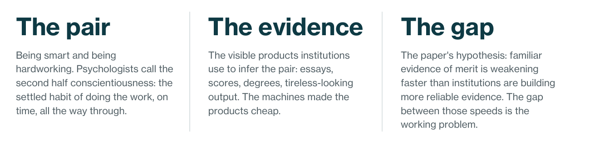
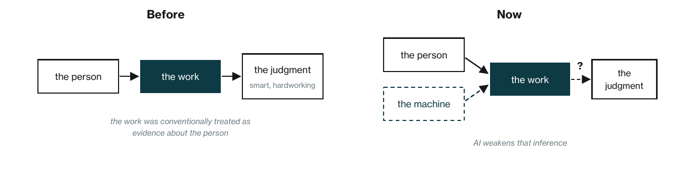
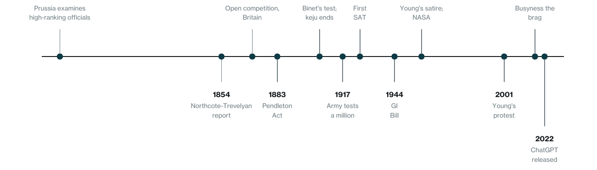
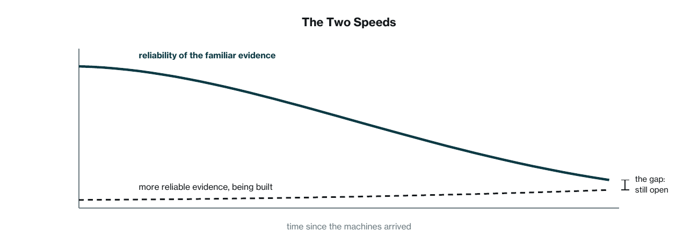

This is an insight paper, not primary research. It draws on the historical record and on published work, cited in the endnotes. Where it looks ahead, it labels guesses as guesses, and its central claim about speed is stated as a hypothesis. Two disclosures belong up front. The author’s own standing rests on the degrees and credentials this paper worries about, so he writes from inside the situation he is describing. And Monderman builds diagnostics for institutions, which is a stake in where this paper ends. Figures 1 and 3 are conceptual renderings. Figure 2 plots documented dates, each sourced in the notes at the back.
In the decades after the Second World War, one piece of advice came to organize professional life in the United States and Britain, with parallels elsewhere: do well in school, work hard. Behind it sit two qualities, intelligence and conscientiousness, and a set of institutional rules built to find and reward them: tests, degrees, reviews, promotions. This paper argues that artificial intelligence has not become smart and hardworking the way a person is. What it produces is the evidence: the essays, analyses, and tireless-looking output institutions used to infer those qualities. The paper advances a hypothesis: that the familiar evidence of merit is weakening faster than institutional rules are adapting, and that this gap, not the disappearance of human merit, is the working problem. It does not measure either speed, and it says so. The paper traces how recently the sorting rules were built, why the usual reassurances about time and money land cold, what happened the last time machines took over something people were valued for, and what may become scarcer next, led by accountable judgment: as answers get cheap, someone willing to stand behind an answer gets expensive. It ends with a five-question audit any leadership team can run this quarter.

1.The Same Two Things
In the decades since the Second World War, the advice handed to children in the United States and Britain, with parallels elsewhere, has barely changed. Do well in school. Work hard. Get the degree, then the good job, and you will be set. Behind every line of that advice sit the same two qualities: being smart and being hardworking. Smart got you the test scores. Hardworking got you through the years of homework, the early alarms, the long climb. Everything else, the house, the standing, the respect, was supposed to follow from those two.
Artificial intelligence lands directly on that advice, though not quite in the way it first appears. The new systems have not become smart and hardworking the way a person is. A machine can run all night, but it does not give up sleep to do it, does not keep a promise, does not care whether the work gets finished. What the systems actually produce is the evidence. Fluent essays. Strong scores on selected standardized tests and competition problems long treated as proof of advanced human reasoning, with real footnotes about conditions and comparison groups. 1 Clean, tireless-looking work at any hour, for the price of a subscription. Being smart and being hardworking were judged, much of the time, through their visible products, alongside conduct, references, and supervised work. The products just got cheap.

That is the plainest way to understand why the anxiety runs so deep, and why it reaches people who are normally hard to rattle. Geoffrey Hinton, whose research helped make the current systems possible, quit his job at Google in 2023 so he could warn about it freely. 2 Yann LeCun, who shared the 2018 Turing Award with Hinton and Yoshua Bengio, says such fears are preposterous. 3 In 2023 hundreds of researchers signed a one-sentence statement putting the risk from AI in the same category as nuclear war. 4 Dario Amodei, who runs one of the leading labs, has written that the same technology could pack a century of medical progress into a decade. 5 The experts do not agree on much. But under these conflicting judgments sits one shared premise: the systems can now handle an expanding share of the tasks that once required a capable, diligent person.
What that does to everyday proof of ability is the thread this paper follows, because the finished work no longer reliably shows who supplied the understanding, the judgment, or the effort. 6
Every society keeps a rough ranking of what a person should be. Nobody writes it down. You can read it anyway, in who gets respect, in what parents push their children toward, in what a proud obituary mentions first. For most of history the top of that ranking was held by other things: noble birth, holiness, courage in war, land. And those older claims never left. Wealth, family, connections, looks, and luck have gone on mattering the whole time, as anyone who has watched a promotion round knows.
What changed, mostly after the Second World War and mostly in the rich democracies, is the story institutions tell about who deserves to rise. Schools, employers, and parents organized themselves around the pair. Psychologists even have a name for the second half: conscientiousness, the settled habit of doing the work, on time, all the way through. In the research literature it is broader than working hard; it takes in orderliness, responsibility, and self-control as well as industriousness. 7 Smart plus conscientious became the official reason people got ahead. Not the only reason. The one you could say out loud. And the pairing is not only a story. In the research on school performance, conscientiousness predicts grades at a level comparable to measured intelligence, and largely independently of it. 8
One clarification keeps this paper honest. Being valued runs on three different levels, and they are not the same thing. There is the story a culture tells about what a person should be. There are the rules institutions use to select and reward: the tests, degrees, reviews, and promotions. And there is the question of who actually ends up with the money and the status. The story explains why the machines feel personal, and the money and status questions get guesses later, labeled as guesses. The subject of this paper is the middle level, the rules, because that is where the evidence just broke, and it is the only level where anyone can act this quarter. The rules are younger than they feel, and the record of how they were built is the most useful guide to what comes next.
2.Younger Than It Looks
For most of history, neither brains nor hard work could reliably lift a person past inherited position on their own. A sharp mind in 1500 might make a man a clerk, or a confessor to somebody important, but it did not make him the important somebody. And among the hereditary elites at the top, visible hard work lowered standing rather than raising it, because it meant you had to work. Gentlemen proved their rank by not toiling. The two qualities existed everywhere, were praised in their place, and stayed in their place. The place was not the top.
One country ran a version of the experiment early. China picked its civil servants by written examination for roughly thirteen centuries, though the exams selected among a narrow male elite and ran alongside family money and patronage the whole time. 9 Prussia was examining its high-ranking officials from 1770. 10 Britain came around in the 1850s, when a government report proposed hiring civil servants through open competition instead of connections; the change took until 1870 to fully land. The United States followed with the Pendleton Act in 1883. 11 Then, in 1905, came an odd coincidence: China abolished its ancient exams the same year Alfred Binet, in Paris, published the first working intelligence test. 12 Binet designed it to find schoolchildren who needed help, not to crown anyone.
The measuring machinery spread quickly after that. The American army gave mental tests to more than a million recruits during the First World War. 13 One of the army’s testers turned that material into a college entrance exam in 1926, the SAT. In the 1930s the president of Harvard started using the new test to award scholarships to boys from outside the usual feeder schools, on the theory that talent was scattered across the country and a score could find it. 14 After 1944 the GI Bill sent millions of veterans to college, though not evenly. Many Black veterans were shut out of the colleges and loans the bill promised, a fact worth remembering in a story about earned advancement. 15 Still, the university took on a new line of work: sorting the nation’s people.
One thing about this machinery matters for later. A test samples the smart half in an afternoon. A degree came to be treated as a proxy for both halves, because coursework takes brains and it takes showing up. Economists have a name for that use of a credential: a signal, worth something to employers because it is costlier to obtain for people who lack the qualities it stands for. 16
The word came late. Meritocracy barely existed in print before the 1950s. A British sociologist named Michael Young put it into circulation in 1958, in a satire about a future sorted entirely by a simple formula, intelligence plus effort. He meant the book as a warning, and it ends with a revolt. 17 Young himself traced the sorting machinery back to the school reforms of the 1870s; the word was new, the build was not. Within two generations, politicians on both sides of the Atlantic were using his word as praise. The word for the new order is, in other words, the same age as NASA. 18 Young lived long enough to watch his warning get repurposed, and in 2001 he wrote a newspaper piece asking the politicians to stop. 19
How completely the pair settled in shows up in ordinary life. College graduates increasingly marry other college graduates, a pattern economists have tracked since the middle of the last century. 20 Parents pour money and hours into schooling on a scale their own parents would have found strange. 21 And the old badge of rank flipped over, at least in America. In 1899 Thorstein Veblen described the American upper class by its leisure: visible free time was the proof that you mattered. 22 By 2017, researchers found American consumers reading the signal the other way, with busyness the new brag, while the same study found Italians still honoring leisure. 23 The flip is real, and recent, and not universal.
So the machinery is old and the dominance is young. The sorting instruments were built across a century, starting in the 1850s. The pair’s reign as the official story of getting ahead came mostly after the Second World War. That is the ground the machine landed on, and it is worth keeping in mind through everything that follows. These rules have a construction date, not a place in nature, and rules with construction dates can be rebuilt.

3.Why This One Feels Different
Machines have taken over human work before, and what people did about it, much of the time, was climb. When machines took field work, families pushed children toward school. When machines took factory work, the standard advice was to retrain and move into work done with the head. For much of the last century, the main answer on offer for technological displacement was more education and a move toward thinking jobs. 25 Not everyone could take that route, and machines reached the office long before this decade. But the direction of the advice barely changed, and it is the advice from the first page of this paper. Do well in school. Work hard. Climb.
The new systems complicate that advice at its destination. The jobs people were told to climb toward are the ones many of whose everyday artifacts, the memo, the analysis, the draft, a machine can now produce on demand. For a hundred years the answer to machinery was to move further up. It is suddenly unclear what further up means.
The second half of the pair takes a particular kind of hit. Effort counted for so much because effort was expensive. Staying up with the books cost sleep. Practicing for years cost everything else those years could have held. When somebody worked that hard, the work said something about them, because it could not be faked cheaply. Calling a person hardworking has long been a compliment about character, not a comment about a calendar. A machine changes the price of the products of effort, not the character. But institutions mostly see products. Once tireless-looking work can be rented by the month, an all-nighter stops proving what it used to.
The old story about fairness feels the same strain. People at the top were said to have earned it, and earning meant the pair: anyone smart enough and willing to work hard enough could rise. That story was never the whole truth, as the last section said. It was still the story real lives were planned around. People built childhoods on it, chose careers by it, judged themselves against it. Millions of diligent people went and became it: the grades, the degrees, the titles, the long climb. When finished work stops showing who earned it, the story gets hard to verify, and for a story about proof that is nearly as bad as being false.
So the anxiety needs no exotic explanation, and it does not deserve to be waved off. A machine aimed at the everyday evidence of the pair is aimed at the middle of a life. The question is what to say to the people standing there. Two common answers, that the machines will hand people their time back, and that money itself will stop mattering, share one problem, and it needs a section of its own.
“As answers get cheap, someone willing to stand behind an answer gets expensive.”
4.Paid in the Wrong Money
The pair paid its holders in two connected ways: standing, and the income that carried it, the house, the neighborhood, the schools. People also value autonomy, health, belonging, and time itself. But for people whose lives were organized around professional achievement, any reassurance that ignores lost income and lost standing will feel incomplete, and both of the common reassurances do.
The first is time, and it is nearly a century old. In 1930 the economist John Maynard Keynes predicted that machines and growth would soon solve the economic problem, and that within a hundred years people might work fifteen hours a week. He was close to right about the growth, and half right about the hours. 26 Working hours in rich countries did fall, roughly by half over the long run. They never came near fifteen. And in America the fall stopped near the top and reversed: by the 2000s, highly paid professional men were putting in some of the longest weeks, the opposite of the old pattern. 27 The reasons are argued about, and the badge flip from the last section is one plausible piece. Whatever the mix, the offer of free time keeps landing on the people trained hardest to refuse it.
The second reassurance concerns money, and it comes from some of the people building the machines. The promises range from sweeping to careful. At the sweeping end, poverty will disappear and there will even be no need to save money. 28 At the careful end, wealth will grow, jobs will remain, and new taxes and distributions will spread the gains; that version deserves to be answered as written. 29 The narrow answer is that all of it describes a future, not a present. The pledges of the wealthy carry no interim deadlines, 30 the proposed taxes are proposals, and the mechanics that would turn the promised future into someone’s present remain, for now, on paper. A very large fortune does not disprove a forecast. 31 It just cannot cash one either.
So both reassurances land cold, not because they are insincere but because they are drawn on a bank that has not opened. Whether it opens is a question of production, policy, and politics, and this paper offers no forecast about it. What the record can offer is plainer: an account of what actually happened the last time machines took over something people were valued for.
5.What Happened to Muscle
Machines have taken over prized human capacities before, and the honest place to start is the ugliest case. In England around 1800, hand weaving in cotton was, in its better branches and better years, skilled and decently paid work, though conditions varied by region, fabric, and branch. Then the earnings fell, and historians credit several causes acting together: an oversupply of weavers drawn in by the good years, the slump after 1815, swings in demand and trade, and the power loom, which spread through the 1820s and 1830s, intensified the decline, and eventually completed the displacement. Over four decades the same skill slid toward starvation wages. Parliament investigated, twice. The weavers petitioned, and kept weaving, and were ruined anyway. By the 1860s the trade was mostly gone. 32 Nothing later in this section softens that. A capacity can keep its dignity while the people who lived on it lose everything.
Americans put the fear of the machines into a song about muscle proper. John Henry, the steel-driving man, races the steam drill through the mountain, beats it, and dies with the hammer in his hand. The ballad is not history, but it preserved the fear, and Americans have kept it in circulation for a hundred and fifty years. 33
What came later is stranger, and its timing is worth noticing without leaning on it. Just as engines were taking over the heavy work, organized celebration of the body took off. The modern Olympics began in 1896. Five years later, London filled the Royal Albert Hall for one of the first big physique contests. 34 Historians credit many causes: national rivalry, the classical revival, city leisure, the new interest in health. Whatever the mix, the direction is hard to miss. Today a forklift outlifts any human who ever lived, and every January millions of people pay for the privilege of lifting heavy things and setting them back down. A fit body can read as proof of discipline, among the other things it signals.
The pattern is not a law, and one counterexample sits close to home. Human calculation used to fill offices and even stages; the arithmetic prodigy was a public marvel. 35 When machines took that over, the arena mostly closed. Nobody fills a theater to watch long division. Chess went the other way. In 1997 an IBM computer named Deep Blue beat Garry Kasparov, the best player in the world, and people predicted the game would wither. Instead, the largest platform grew from about 100 million accounts at the end of 2022 to a reported quarter billion by early 2026. 36 The engines became training partners, and the crowds still gather for the humans, not the programs. Chess suggests that a machine playing better need not end interest in humans playing at all. It does not prove that every prized capacity gets the same second act.
So the record resists a single moral. The paycheck attached to a capacity can collapse when machines take it over, and the collapse can eat a generation; that part deserves more honesty than it usually gets. Some capacities then fade to a hobby’s corner, and some are chosen again, on new terms, as things people do because doing them is the point. Which path smart and hardworking would take is a guess, and the next section treats it as one, level by level.
“These rules have a construction date, not a place in nature.”
6.What May Become Scarcer
No committee picks what comes next, and this section makes guesses, labeled as guesses, one for each of the three levels from the start of the paper. A professional virtue, a consumer taste, and an economic position are not competing for one vacant throne.
Inside the rules, where this paper lives, the strongest candidate is accountable judgment. Software can already draft a will, and many people still pay the lawyer anyway, partly for judgment and partly for a name on the document, a person who answers if it goes wrong. Commercial aviation offers an analogy rather than proof. It retains identifiable human command alongside extensive automation: the rules require a minimum flight crew and name a pilot in command who is directly responsible for the aircraft, so a person answers for the flight even when the machine flies most of it. 37 A machine cannot take responsibility. It cannot be held to a promise or made to care that it failed. As answers get cheap, someone willing to stand behind an answer gets expensive. Skill with the machines will matter too, the way skill with computers once did, though bare access stops telling people apart the moment everyone has it.
In markets, the guess is smaller: presence and provenance may carry premiums. Concert prices have risen sharply while recordings are nearly free; people pay for the room, the night, the crowd. 38 Handmade goods hold premiums for skill, material, scarcity, and story. A writers' organization now certifies books as human-written, a signal experiment worth watching, 39 though whether readers will pay extra for the mark is not yet known.
And on money and status, the uncomfortable guesses are ownership and audience. If the products of smart and hardworking can be rented, owning what everyone rents stays scarce, and ownership, unlike the pair, is often inherited rather than earned. Audiences are scarce by nature too. Both guesses sit outside this paper’s subject, and neither is a comfortable heir to a story about earning. They are here because honesty requires it, not because the rules of any school or company can do much about them.
The rules can do something about the first guess, and they already hold instruments nearby; deeds, signatures, and reporting lines have handled ownership and responsibility for centuries. What they lack are instruments for the thing the machines just blurred: who understood, who judged, who actually did the work. That is the final section’s subject.
7.Moving Ground
A ranking of persons is a story, but institutions turn stories into rules. The degree requirement on the job posting. The graded essay. The performance review, the promotion list, the billable hour. None of these rules covers everything an institution does, and none of them was written by a villain. Most were written, across the last century, to do something reasonable: find and reward evidence of the pair. Rules like that do not update themselves when the evidence stops being reliable.
Schools felt it first, and not because school is only a test; schools also teach, supervise, and raise people. But a good share of what schools hand out, grades, rankings, diplomas, runs on written evidence of the pair. Within a year of the new machines arriving, one test found high-school teachers misreading the authorship of paired essays about three times in ten. 40 The response is wider than nostalgia. Handwritten exams are back, and sales of the old blue booklets are rising, but so are oral defenses, supervised work, drafts with visible steps, and lessons in using the machines honestly. 41 Different tools, one common idea: watch the work happen, rather than judge only the finished page.
Businesses are next, and the exposure is quieter than layoffs. Where the rules pay for evidence of the pair, and the machine supplies that evidence cheaply, the rules can start paying for the wrong things. A company can screen out good people for lacking a degree that proves less than it did. It can reward whoever looks busiest when looking busy is nearly free, and bill by the hour for work that takes minutes, while judgment can stay thinly observed or implicit. None of this looks like an emergency, and that is the problem. The waste arrives quietly, as lost time, lost money, and lost capacity, in places nobody thought to look.
Someday the advice to children will get a new line, and nobody knows yet what it will say. This is a moment when nearly everyone is predicting the future. Some of the predictions will turn out right. Most will not. Even with all the information in the world, fortune telling is mostly a way of coping with the present. The future is unknown, and unknown is uncomfortable, so people fill it in. Some fill it with abundance: endless money, goods and services that never run out. Others fill it with ruin. Both stories do the same job. They replace an unknown future with a known one, and a known future, even a grim one, is easier to sit with. Neither can be checked.

What can be checked is the present, and for an institution the checking has a shape. Any leadership team, this quarter, can ask a short list of questions and follow the answers. Where is polished output being mistaken for understanding? Where is volume being mistaken for effort? Where has authorship gone unclear, and who still answers when an AI-assisted answer fails? Where can judgment be watched directly, rather than inferred from the paperwork? Which rules need supervision or visible process added, and which credential or activity measure no longer yields a signal worth acting on, and should go?
1. Where is polished output being mistaken for understanding?
2. Where is volume being mistaken for effort?
3. Where has authorship gone unclear, and who still answers when an AI-assisted answer fails?
4. Where can judgment be watched directly, rather than inferred from the paperwork?
5. Which rules need supervision or visible process added, and which credential or activity measure no longer yields a signal worth acting on, and should go?
None of those questions requires a forecast. This paper’s hypothesis is that the machines are weakening the familiar evidence of merit faster than institutions are building more reliable evidence, and that the gap between those two speeds is the working problem. The audit is how an institution checks that hypothesis against its own rules. A person can poke and prod at the future. The better use of the hours is to ask what the rules in the building actually pay for now, and to set the footing there.